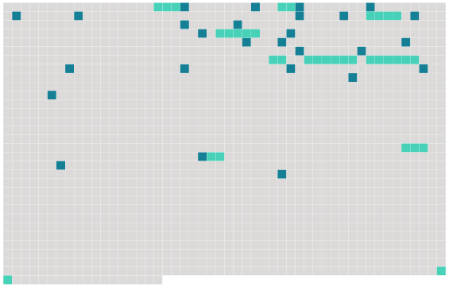

Longueur nb maillons : 37 mentions |
|
Pendant des années, j'ai entendu rue d'Ulm et dans les salles de la Sorbonne [des hommes importants] [qui] parlaient au nom de l'Esprit. [C'] étaient de [ces philosophes] [qui] enseignent la sagesse dans des revues, [écrivent] des ouvrages de références et de bonnes raisons. [Ils] entrent dans les corps savants, [ils] convoquent des congrès pour décider des progrès que l'Esprit a faits dans une année et de ceux qui lui restent à faire. [Ils] ont des rubans à [leurs] revers comme [de vieux gendarmes retraités] [Ils] inaugurent des plaques de marbre, sur des maisons natales, sur des maisons mortuaires, à des carrefours hollandais. Ces commémorations [leur] font voir du pays. [Ils] vivent presque tous dans les quartiers de l'Ouest de Paris : à Passy, à Auteuil, à Boulogne, quartiers tranquilles, pas de bruits, peu d'hommes, les filles n'y sont pas réglées avec un an de retard.
[Ce] sont [les Sages du XVIe arrondissement] Cependant, [ils] présentent des idées bien dressées, des théories aux dents limées sur la psychologie, sur la morale, le progrès : ces abstractions montraient déjà la corde au temps de Jules Simon ou de Victor Cousin : elles font encore bon usage. [Ils] sont bonhommes, [ils] disent que la vérité s'attrape au vol comme un oiseau naïf. [Ils] lancent des messages sur la paix et la guerre, sur l'avenir de la démocratie, sur la justice et la création de Dieu, sur la relativité, la sérénité et la vie spirituelle. [Ils] composent des vocabulaires, parce qu' [ils] ont découvert tous ensemble une proposition importante : les problèmes n'existeront plus quand les termes en seront convenablement définis. [1 phrases] [Les philosophes] seront simplement [les chiens de garde du vocabulaire] et [les historiens de ce Moyen âge] où les mots avaient plusieurs sens.
En attendant, [ils] apprennent à mettre de côté les pensées dangereuses pour le jour où [leurs] poisons seront évaporés : la raison a le temps, elle [les] retrouvera à son heure qui ne coïncide pas avec l'heure des hommes.
[Ils] font ainsi de la philosophie, qui demande en somme assez de propreté et de soins pour qu'il soit honorable d'y consacrer des vies soustraites à la comptabilité et à la société de Jésus. [1 phrases]
[Ils] montrent tant de bons tours, de proverbes, de figures que je ne sais même plus si, à force de silences avertis par les métaphores du sommeil, d'entretiens avec les passants attardés sur les places, dans les casernes, les débits, les usines, je retrouverai le sens des paroles droites et des simples inventions des hommes. Parmi [eux] un grand penseur : Léon Brunschwicg. [13 phrases] Nous tournions comme l'on nous avait appris à tourner, occupés à de petits jeux de construction enseignés par [tous ces fonctionnaires] Il y avait un peu partout des gens dans les campagnes et les banlieues : mais nous, nous regardions pour faire comme [eux] [nos maîtres] et nos pères tristement accroupis dans les coins, se relevant parfois pour faire rire leurs patrons, leur livrer une commande d'illusions, d'arguments ou de justifications. [Bouffons] , complices : métiers de l'esprit. [2 phrases] Nous sommes perdus dans [leur] galerie des machines où tous les coins mal éclairés dissimulent des rencontres sanglantes, guerres aux colonies, terreur blanche aux Balkans, assassinats américains applaudis par toutes les mains françaises : la terrible hypocrisie des hommes au pouvoir n'arrive pas à voiler la présence des malheurs que nous ne comprenons pas : nous savons seulement qu'ils sont là, qu'il arrive des malheurs quelque part. [24 phrases] [Nos maîtres] paraissent inébranlables, les machines qui laminent toutes les existences trop bien jointes pour être brisées. |
 |
Il est possible de télécharger la ressource sur la page Ortolang |
Si vous avez des questions ou vous voyez des erreurs, merci d'envoyer un mail à silvia.federzoni89@gmail.com |